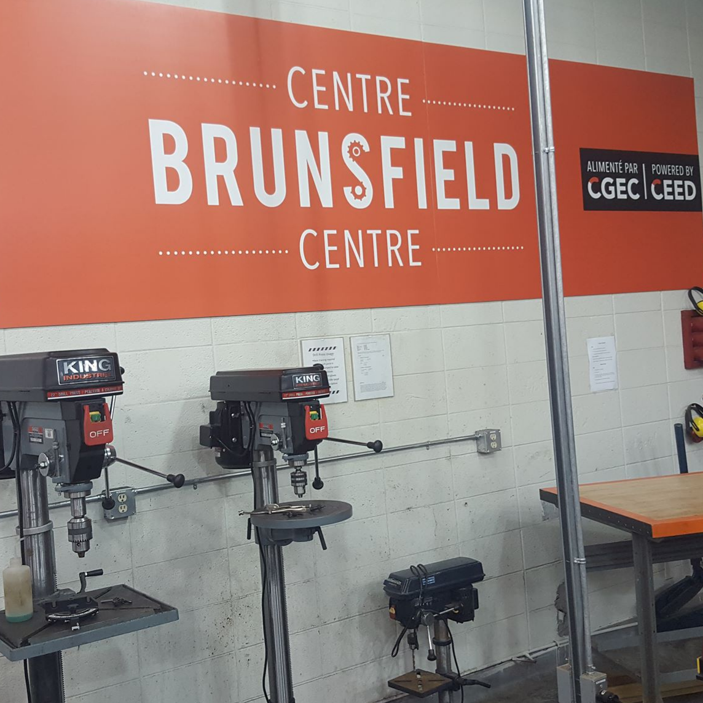
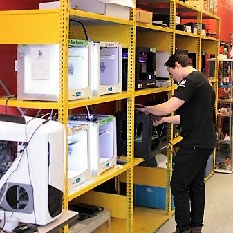

Friday, October 27th 17:00 - 21:00
Location: Media Centre, Morisset Hall, 1st floor, 65 University Private
| 17:00 | Registration |
| 17:30 | Dinner |
| 18:15 |
Opening RemarksPresident and Vice-Chancellor of the University of OttawaJacques FrémontOpening RemarksDean, Faculty of EngineeringJacques BeauvaisOpening Remarks |
| 18:45 |
The panelists will discuss efforts by maker collectives to foster dynamics of socio-economic inclusion and diversityModerator:
|
Saturday, October 28th
MakerRoom 1:MNO E218 |
MentorRoom 2: MNO E217 |
Skill Makerlounge
|
|
|---|---|---|---|
| 9:00 |
Redesigning education systems to raise fulfilled global citizens with the necessary knowledge, skills and character to solve humanity's most pressing challengesYoussef GabouneRedesigning Education Systems |
||
| 10:15 |
What is the difference between a Makerspace and a Hackerspace? How did each evolve and where are they going?Tailor DresdenHakerspace v.s.
|
The mindset is so much more important than the stuff or the space. Make space in your context for learners to make. Support them in questioning, design, discovery, prototyping and iteration.Shauna PollockMaking Space
|
4 easy steps to coding an autonomous robot that helps encourage students. Session will have a draw for a codemyrobot.caRick AlexandersonHands-on Coding robot
|
| 11:30 |

Come see as students from high schools and universities all across the region come and compete for the Student Innovative Design Awards.
|
||
| 13:00 |
Community labs or biomakerspace bring biotechnology to the masses and help incubate biotech projects. Learn some useful tips on how to access resources offered at community labs to turn biotech ideas into reality.Vipal Jain
|
Learn about a project that enabled Indigenous students to experience STEM though both Indigenous cultural knowledge and western science, tech, engineering, and math.Paula HallInSTEM: Empowering Indigenous Youth Through Social Change |

Think Big, Build Bigger
|
| 14:15 |
Delve into the world of “Making off-grid”. Learn about how this can be applied to manufacturing process in places like the ArcticAnthony Dewar"Making" off
|
Libraries have been great supporters of the Maker culture. Several examples of successful makerspace in public and academic settings will be showcased. The benefits and challenges of co-location of Makers and Librarians will be discussed.Jasmine Bouchard
|
Learn to use a program called A-frame to create a virtual world using HTML. It is as easy as creating a website!IEEE uOttawa
|
| 15:30 |
Panelists will discuss several topics, which include preprinting considerations, part reproducibility, printing process characterization, software used in the process, post-processing and process validation.Moderator:
|
Panelists will discuss how "making" can be included in educationModerator:
|
Richard L'Abbé MakerspaceLaser
|
Sunday, October 29th
MakerRoom 3:SITE A0150 |
MentorRoom 4:SITE B0138 |
Skill Makerlounge
|
|
|---|---|---|---|
| 9:00 |
Designing and building interactive, tactile, and colourful elements that not only delight people but help them engage with their environmentAdrian Jones
SENSE-I: Multi-Sensory Interactive Products
|
Panelists will discuss the innovative ways "maker" culture is making the world more accessibleModerator:
|

Learn the basics of designing and creating a 3D model. Master the basic steps of exporting a model and printing it on the 3D printer.Richard L'Abbé MakerspaceIntro to 3D printing |
| 10:15 |
Learn how the University of Ottawa can put you on the path for innovation and lead to the development of KABO. A standalone device which recognize any type of object using deep learning technology and build their dream projectsAli-id Bouh AliKABO : Pocket-Size Artificial Intelligence |
"Maker Mobiles" have become a new way to encourage making and prototyping to audiences without access to a community makerspace. Panelists will discuss their own "Maker Mobile" programs and how they came into existenceModerator:
|
Robot Mission is empowering communities to help our planet using 3D printed robots to collect tiny trash and shoreline debris.Erin KennedyHelping the Planet with Robots |
| 11:30 |

The Makershow will be a grand assembly of makers, tinkerers, experimenters, tech fanatics, as well as industry exhibitors.
All coming together to showcase their work and talent.
|
||
| 13:00 |
Ting ZhangMakerspaces in China |
What is the potential of Makerspaces in Indigenous Communities?Jasmin WinterMakerspaces in Indigenous communities |
Learn how to create your own paint as well as some interesting methods to apply paint to your projectsJason CobillWeird
|
| 14:15 |

Invent. Build. Play
|
Who is Kids Code Jeunesse? What do they do? How is their program helping train teachers in the new world of “Making”Andrew McDonaldHow can we support your Makerspace? |
Get to know the basics of block programing while programing a robotLethania MartinezBasic Robot
|